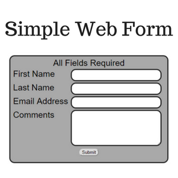
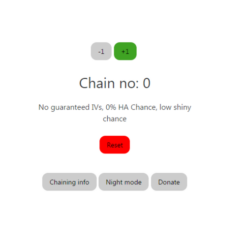
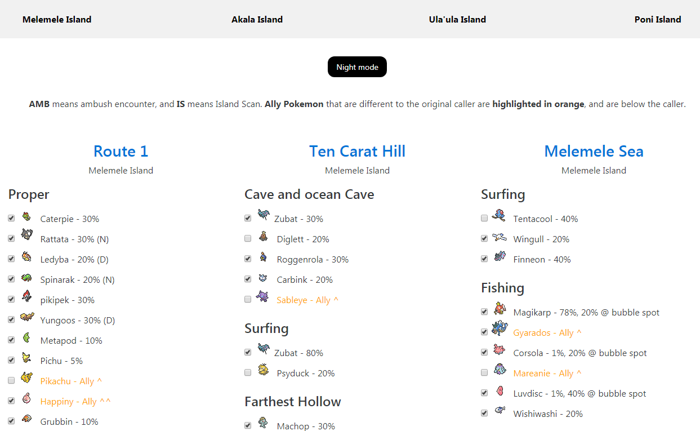

Welcome to my porfolio page! Here, you can see all the programs and websites I have made. You can check my GitHub profile out here to see all of my projects (I may have not added some here yet).
Simple keylogger for Windows, Linux and Mac
Simple keylogger is a program that logs your keystrokes. It's available for Windows, Linux and Mac, written in C++, Python and C respectively.
You can find it on Github here.
League Statistics

League Statistics is one of the first proper Python programs I made. It uses the Riot API to allow you to look at a players match statistics, and you can save and load players in as well as select what server they use. I also wrote a website for it, with a beginners guide so people new to Python would be able to get it up and running. You can view the website here.
League Statistics is open source, and you can view it on GitHub here. If you want to view the website, you can view it here.
A simple HTML and PHP form

A web form that is a standalone page, or can be embedded into a site. It allows a person to input their name, last name, email and comments, and does not allow the form to be submitted unless this info is correct.
You can find it on Github here.
Chain Counter
Chain Counter is a web tool that allows you to count SOS chains in Pokemon Sun and Moon. It has a live updating message below it that shows the chances you have of catching rarer Pokemon, a night mode and many more features!
The repository can be found on GitHub here.
Pokefinder

Pokefinder is a web app that allows users to find Pokemon by route. Users can check off a Pokemon once caught, and they can also save their progress to local storage on their device, so they won't lose track of what Pokemon they have caught. Pokemon that are the same will also be checked off using JavaScript. A table of contents at the top of the website allows users to jump quickly to different routes. The site also features a dark mode, for use at night.
You can find Pokefinder on Github here.
TWSdental
A HTML site for a mobile dentist business. Text and images supplied by client, with certain requests for end product. Client was very happy with end product, with quick loading speeds and basic SEO implementation. In addition to this, a simple HTML form was implemented in order to easily receive mail.
The client had a Google Blogger site that they wanted intergrated into the site, and this was done using an iFrame, making the blog look as if it was native to the site.